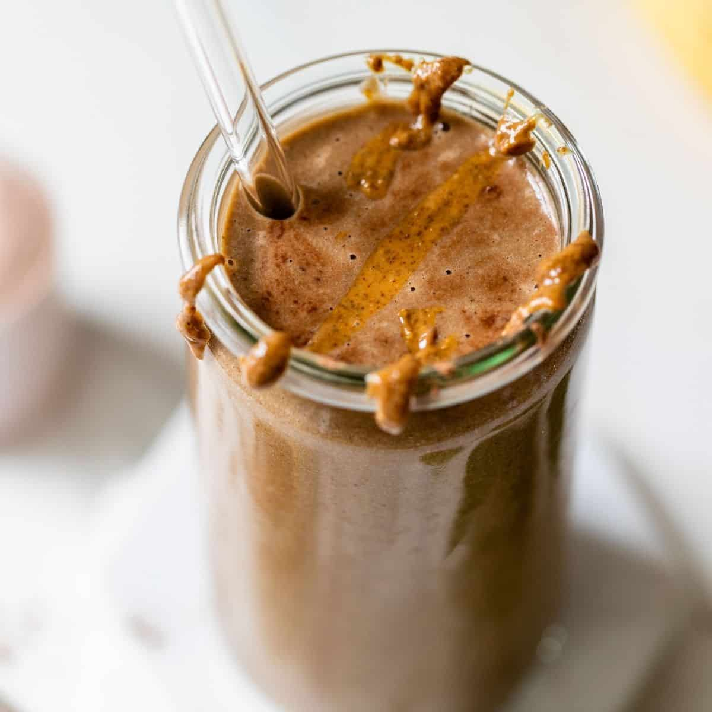

<>
Odin Recipes
Dusan's Shake

Description
This is high protein, easy and fast to make shake when you dont have time for making a meal
Ingreients
- oats
- ice
- nes coffe
- prtein powder
- greek yogurt
- 300 ml milk
Steps
- Blend oats separately first
- Add other ingredients
- Blend all together